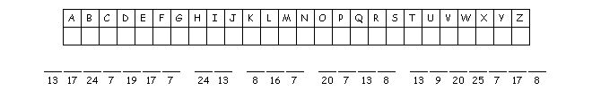

A message is encrypted using numbers where each number corresponds to a different letter of the alphabet. Decipher the following encoded text:
1317247191772413816720713813920257178
Fill out the following table.

By observing the frequency of the numbers and by noting that the maximal number of letters in the English alphabet is 26, we get the following message: SCIENCE IS THE BEST SUBJECT.
See the solution above.